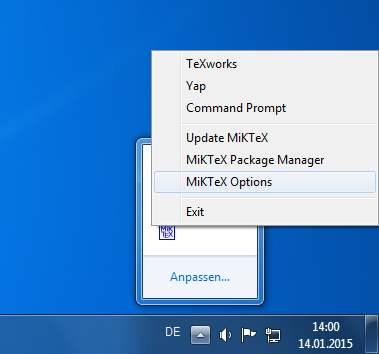
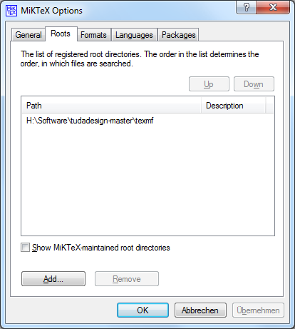
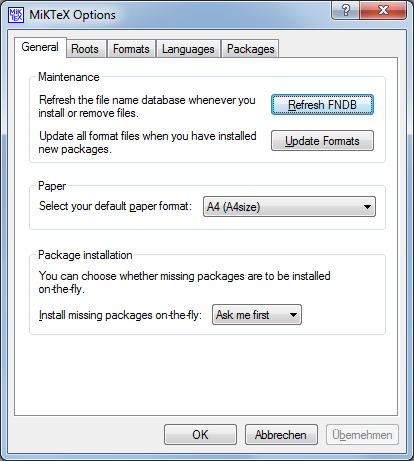

Manuelle Installation
-
Zunächst muss das aktuelle Archiv heruntergeladen werden. Link
Das Archiv kann an einen beliebigen Ort entpackt werden. Dies kann, muss aber nicht, auch ein Unterverzeichnis von MikTeX Portable sein.
Wie immer bei Windows sollten Leerzeichen im Pfad möglichst vermieden werden.
-
Mit einem Rechtsklick auf das MikTeX-Icon im Systemtray die Optionen öffnen

-
Im Reiter "Roots" mit dem Button "Add" einen neuen Eintrag hinzufügen.
Hierbei den Ordner texmf im entpackten Archiv auswählen

-
Zurück in den Reiter "General wechseln". Hier die mit "Refresh FNDB" die Dateinamendatenbank neu erstellen lassen.
Dabei wird im neu gewählten Root-Ordner ein weiterer Ordner erstellt, in dem MikTeX die gefundenen Dateien auflistet.

Statt das Zip-Archiv zu verwenden, kann natürlich auch mit git das Repository geklont werden. Damit ist es einfach möglich immer auf dem aktuellen Stand zu bleiben.